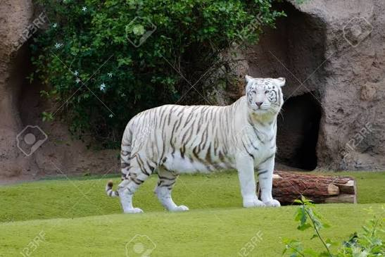

El tigre blanco no es una especie ni una subespecie diferente de felino, sino una variación genética del tigre de Bengala (Panthera tigris tigris). Esta condición, conocida como leucismo, elimina el pigmento naranja de su pelaje pero mantiene sus características rayas negras y les otorga unos llamativos ojos azules.